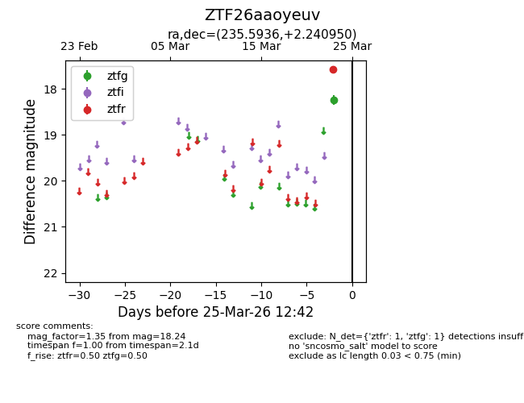
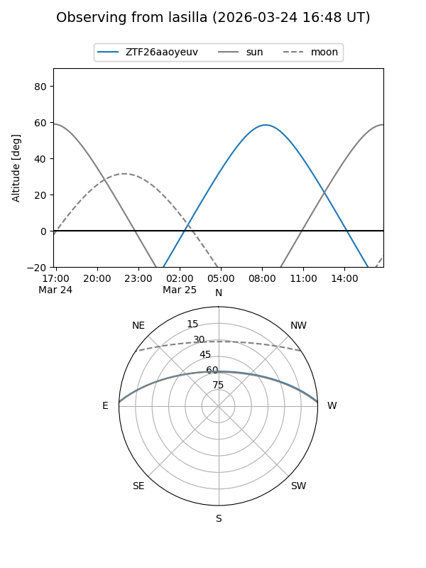
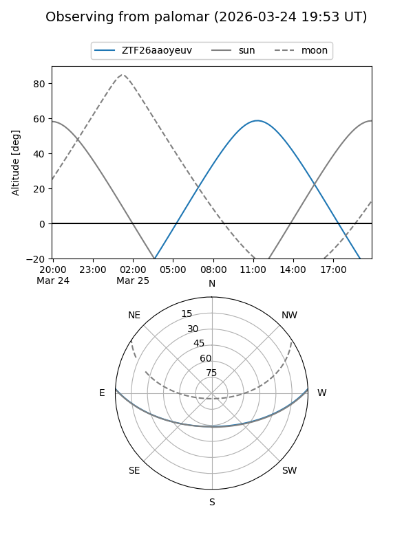

ZTF26aaoyeuv
Target ZTF26aaoyeuv at 2026-03-25 12:44
Aliases and brokers:
FINK: link
Lasair: link
ALeRCE: link
alt names
ZTF26aaoyeuv (ztf,fink_ztf)
Coordinates:
equatorial (ra, dec) = 235.5936,+2.24095
equatorial (HMS+DMS) = 15:42:22.46,+02:14:27.42
galactic (l, b) = (9.0753,+42.14706)
Flags:
Photometry:
last ztfg=18.24, ztfr=17.58
1 ztfg, 1 ztfr detections
Lightcurve

Visibility


Additional plots